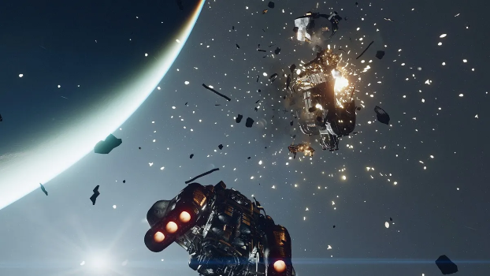
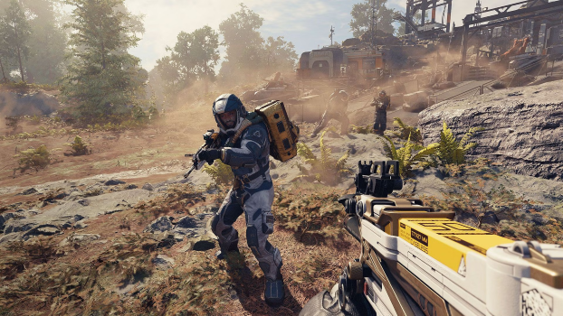

Starfield
Description
Starfield is the first new universe in over 25 years from Bethesda Game Studios, the award-winning creators of The Elder Scrolls V: Skyrim and Fallout 4. In this next generation role-playing game set amongst the stars, create any character you want and explore with unparalleled freedom as you embark on an epic journey to answer humanity’s greatest mystery.
In the year 2330, humanity has ventured beyond our solar system, settling new planets, and living as a spacefaring people. You will join Constellation – the last group of space explorers seeking rare artifacts throughout the galaxy – and navigate the vast expanse of space in Bethesda Game Studios’ biggest and most ambitious game.
Tell Your Story
In Starfield the most important story is the one you tell with your character. Start your journey by customizing your appearance and deciding your Background and Traits. Will you be an experienced explorer, a charming diplomat, a stealthy cyber runner, or something else entirely? The choice is yours. Decide who you will be and what you will become.
Publishing Info
- Publishers: Bethesda Softworks LLC
- Developers: Bethesda Game Studios, Bethesda Game Studios Dallas LLC
- Released: Sep 6th, 2023
 
Game Info
- Genre: Role-playing
- Perspective: 1st-Person, 3rd-Person Behind View
- Gameplay: Action RPG, Sandboc/ Open World, Shooter
- Interface: Direct Control
- Vehicular: Space Flight
- Setting: Fantasy, Post-Apocalyptic, Sci-Fi / Futuristic
Quote
Starfield delivers on everything it promised and then some. It's the ultimate sci-fi game, giving players an incomprehensibly massive world to explore and letting them play however they want. Starfield has what it takes to be another Skyrim-level game that's played religiously for the next decade. It's utterly engrossing, an absolute must-play, and the best Xbox console exclusive in years.Full Review: Game Rant